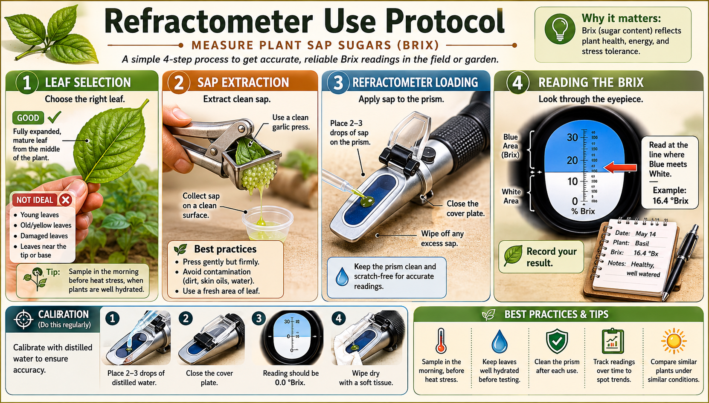

Material removed from reader-facing working manuscripts but retained for provenance, verification, or later production decisions.
Source: v1:No-till + comp:Cover Crop Selection + SOP mirrors. Hold reason: reader-facing production artifact.
Batch M1 — Bed Building:
Batch M2 — Brewing and Application:
Batch M3 — Ongoing Operations:
Batch M4 — Sanitation and Seasonal:
Phase M is locked. Remaining phases (D–J, N) route to Manus AI with Claude editorial review.
Source: v3:Herb chapter + LSE-223 + parallel design sections. Hold reason: reader-facing production artifact.
These entries belong primarily in Part III — Amendments, Inputs, and Fertility Tools, with the biological inoculant entries also cross-linked into the soil biology / IPM framework.
| Entry ID | Entry | Placement |
|---|---|---|
| LSE-034 | Trichoderma harzianum / asperellum / virens | Biological inputs / microbial inoculants |
| LSE-035 | Endomycorrhizal Inoculants (AMF) | Biological inputs / microbial inoculants |
| LSE-036 | Effective Microorganisms (EM-1) | Biological inputs / microbial inoculants |
| LSE-040 | Kelp Meal | Fertility inputs / mineral and organic amendments |
| LSE-042 | Fish Hydrolysate (Liquid) | Fertility inputs / mineral and organic amendments |
| LSE-043 | Fish Bone Meal | Fertility inputs / mineral and organic amendments |
| LSE-044 | Crab Meal / Crustacean Meal | Fertility inputs / mineral and organic amendments |
| LSE-045 | Feather Meal | Fertility inputs / mineral and organic amendments |
| LSE-046 | Blood Meal | Fertility inputs / mineral and organic amendments |
| LSE-047 | Soybean Meal | Fertility inputs / mineral and organic amendments |
| LSE-048 | Alfalfa Meal / Pellets | Fertility inputs / mineral and organic amendments |
| LSE-055 | Dolomitic Lime | Fertility inputs / mineral and organic amendments |
| LSE-056 | Calcitic Lime | Fertility inputs / mineral and organic amendments |
| LSE-059 | Potassium Sulfate (K2SO4) | Fertility inputs / mineral and organic amendments |
| LSE-062 | Borax / Solubor | Fertility inputs / mineral and organic amendments |
| LSE-063 | Epsom Salt (Magnesium Sulfate) | Fertility inputs / mineral and organic amendments |
Source: v3. Hold reason: superseded structural wrapper.
Source: v3. Hold reason: production planning artifact.
Herb Bed System Map — Three-zone diagram showing dry Mediterranean strip, moist kitchen bed, and containment/insectary edge. Purpose: teach irrigation grouping and bed placement. Caption: “Do not put every herb on one emitter schedule; group herbs by drainage, water demand, and season.” Alt text: “Diagram of three herb zones labeled dry, moist, and containment/insectary.”
Basil Storage Warning Card — Side-by-side of basil in water above 50°F versus blackened chilled basil. Purpose: prevent the most common postharvest mistake. Caption: “Basil and shiso are chilling-sensitive; store above 50°F.” Alt text: “Basil stems in a jar at room temperature next to wilted blackened chilled basil leaves.”
Cilantro-to-Coriander Lifecycle — Cool-season leaf harvest, bolting, flowering, seed drying. Purpose: show leaf versus seed harvest timing. Caption: “Cilantro is the leaf crop; coriander is the seed crop.” Alt text: “Four-stage cilantro plant showing leafy growth, flower stalk, seed heads, and dry coriander seed.”
Fennel Type Comparison — Common fennel, bronze fennel, and Florence fennel. Purpose: prevent planting the wrong type. Caption: “Common fennel does not make the Florence fennel bulb.” Alt text: “Three fennel plants side by side showing leafy common fennel, bronze fennel, and bulb-forming Florence fennel.”
Drying Woody Herbs — Bundles/screens for rosemary, thyme, oregano, sage, and bay. Purpose: teach drying without mold. Caption: “Dry woody herbs in small batches, shade, and airflow; store whole leaves.” Alt text: “Herb stems drying on screens and hanging in small bundles.”
Mint Containment Diagram — Mint in above-ground container versus rhizomes escaping a bed. Purpose: show containment failure. Caption: “Mint belongs in containers or controlled edges, not open annual beds.” Alt text: “Mint roots spreading beyond a bed contrasted with mint confined in a large pot.”
Lemongrass Harvest and Overwintering — Outer stalk removal, container lift, frost protection. Purpose: show warm-season/frost-tender management. Caption: “Lemongrass is a warm, moist, frost-tender herb; harvest outer stalks and plan winter protection.” Alt text: “Large lemongrass clump with an outer stalk being cut and a pot moved indoors.”
Herb Storage Decision Tree — Basil/shiso above 50°F, cold-humid herbs, dry woody herbs, seed storage, frozen cubes. Purpose: chapter summary visual. Caption: “Storage method follows herb type, not recipe category.” Alt text: “Decision tree for storing basil, fresh refrigerated herbs, woody dried herbs, seed herbs, and frozen herb cubes.”
Source: v3. Hold reason: production planning artifact.
Create a cohesive educational infographic set for “Herbs in the North Texas Living Soil Garden.” Style should match the Living Soil Encyclopedia visual language: clean cream background, dark green section headers, soil cross-sections where relevant, labeled botanical illustrations, practical callouts, and no unverified numeric rates unless supplied. Do not imply images are source evidence. Include: (1) three-zone herb bed map showing dry Mediterranean strip, moist kitchen herb bed, and containment/insectary edge; (2) basil/shiso storage warning with “store above 50°F”; (3) cilantro/coriander lifecycle with leaf harvest before bolting and seed drying after maturity; (4) fennel type comparison showing common fennel, bronze fennel, and Florence fennel; (5) woody herb drying setup with rosemary, thyme, oregano, sage, bay, and lavender; (6) mint containment diagram showing container culture versus rhizome escape; (7) lemongrass harvest and frost plan; (8) herb storage decision tree. Captions must state that insectary herbs support habitat/nectar/pollen/natural enemies but do not replace scouting or guarantee pest control. Avoid medicinal claims, essential-oil treatment claims, companion-planting miracle claims, or unsupported pest-repellent claims.
Source: v2. Hold reason: version-control wrapper removed after profile movement.
Source: v2. Hold reason: version-control wrapper removed after profile movement.
Source: v1. Hold reason: source-pending; held from reader until verified.
What it is. A refractometer measures soluble solids, often reported as Brix. Growers use it as a quick observational tool for plant sap, fruit juice, or crop samples. In living-soil circles, Brix is often used as a proxy for plant vigor, carbohydrate status, mineral flow, or general quality.

Why growers use it. Refractometers are inexpensive, fast, and appealing because they turn plant condition into a number. A grower can record trends across time, compare morning and afternoon readings, compare varieties, or compare treatment and control beds. This makes Brix useful as a notebook discipline even when interpretation remains limited.
What is reasonably supported. Soluble solids can be measured. Trends within the same crop, sample timing, and method can be informative. Brix can sometimes align with ripeness, sugar accumulation, stress, or plant-condition shifts.
What remains uncertain. The active canonical 12-section Refractometer Use Protocol source body is missing. Therefore this appendix does not provide instrument procedure, sampling steps, calibration instructions, target numbers, crop thresholds, or diagnostic rules. A final protocol requires an active source body and source-controlled procedure.
Safe trial boundary. Use Brix only as an observation trend. Do not treat it as a diagnosis, prescription, nutrient-density guarantee, pest-resistance proof, or medical-quality claim. Keep sample timing and plant part consistent. Compare against untreated controls.
Status in this encyclopedia. Source-pending placeholder. It preserves the topic without reconstructing the missing protocol.
Source: comp:h1-m4-4-cover-crop-planting-and-termination-sop. Hold reason: reader-facing production artifact.
Batch M1 — Bed Building:
Batch M2 — Brewing and Application:
Batch M3 — Ongoing Operations:
Batch M4 — Sanitation and Seasonal:
Phase M is locked. Remaining phases (D–J, N) route to Manus AI with Claude editorial review.
Source: v3:LSE-132 + v1 practitioner note. Hold reason: reader-facing production artifact.
Source: v1. Hold reason: replaced by five-book working front matter.
Private edition notice: This edition is for private review and learning use. It is not public/sold publication-ready.
Evidence-status notice: Technical uncertainty has not been deleted. Inline verification flags were moved out of the reader-facing body and consolidated in the back-matter Verification and Open Items Index.
Image marker legend:
Product labels and local law override notice: Product labels, SDS documents, soil and water tests, local law, municipal rules, and current extension guidance override this private draft wherever they apply.
How to use this book: Read the main chapters as a practical field reference. Use the back-matter ledgers when you need to audit unresolved claims, source trails, product-label boundaries, image rights, or future-publication blockers.
Source: v1. Hold reason: decomposed across Books 1, 4, 5, and hold ledger.
Source: v1. Hold reason: decomposed into separate Book 5 experimental chapters.
Source: v1. Hold reason: product-label verification required.
These placeholders preserve the topic name and hold reason. They are not practitioner advice and do not authorize product use.
Why it is not removed. Neem oil is widely used by gardeners and belongs in the project’s future selected-product review.
What evidence is still needed. Exact selected product identity, current label, SDS, TDA status if applicable, OMRI/NOP listing if claimed, and heat/oil/sulfur safety reconciliation.
What must not be claimed yet. Do not finalize rates, target pests, crop sites, heat thresholds, PPE, PHI/REI, sulfur intervals, OMRI status, or broad neem-oil efficacy.
Future-edition path. Create selected-product packet and then rewrite label-boundary text.
Why it is not removed. Karanja oil is adjacent to neem oil in practitioner systems and appears in product and organic-input conversations.
What evidence is still needed. Selected product label, SDS, COA/analysis, TDA status if applicable, OMRI/NOP if claimed, and identity confirmation.
What must not be claimed yet. Do not borrow neem evidence or make broad pesticidal, foliar, safety, or crop-contact claims.
Future-edition path. Select representative product and build a product packet.
Why it is not removed. JWA is central to JADAM practice and must be represented honestly.
What evidence is still needed. Legal/use status, caustic-handling support, crop-contact compatibility, tank-mix compatibility, and any pesticide/adjuvant boundary.
What must not be claimed yet. Do not include a casual caustic recipe, pesticide-adjuvant recommendation, disinfectant claim, crop-contact safety claim, or contact-time claim.
Future-edition path. Build a JWA legal/safety/source packet.
Why it is not removed. These organisms appear in biological product literature and remain relevant to microbial product review.
What evidence is still needed. Split decision, product/strain identity, current labels, SDS, TDA status where applicable, OMRI status if claimed, and source-body audit.
What must not be claimed yet. Do not treat B. pumilus evidence as clearing B. licheniformis. Do not generalize strain-specific disease claims.
Future-edition path. Split into product/strain-specific notes or compile only after selected-product clearance.
Why it is not removed. Metarhizium is a significant entomopathogenic fungus in biological pest management.
What evidence is still needed. Selected product label, taxonomy line, TDA status, current SDS, OMRI status if claimed, and source-bound target-pest framing.
What must not be claimed yet. Do not generalize one product’s label to all Metarhizium products or old strain names.
Future-edition path. Complete selected-product/taxonomy packet.
Why it is not removed. Pseudomonas fluorescens has PGPR and biocontrol relevance, and BlightBan-type products have appeared in the source-control queue.
What evidence is still needed. Current EPA/PPLS selected label, current SDS, TDA status, OMRI if claimed, and product identity.
What must not be claimed yet. Do not use manufacturer pages or specimen labels as a substitute for current PPLS evidence.
Future-edition path. Reopen after current product packet is pinned.
Why it is not removed. Molybdenum is relevant to plant nutrition, nitrogen metabolism, and deficiency correction, but sodium molybdate is high-risk and test-bound.
What evidence is still needed. Exact SDS, guaranteed analysis, soil/tissue/sap interpretation framework, crop deficiency threshold, toxicity boundary, contaminant support, and label/source control.
What must not be claimed yet. Do not frame it as a casual garden amendment. Do not invent rates or broad deficiency recommendations.
Future-edition path. Handle in a micronutrient safety packet before canonical compilation.
Source: v1. Hold reason: jurisdictional/legal verification required.
What it is. Graywater irrigation refers to potential reuse of certain household wastewater streams for landscape or garden irrigation. Gardeners ask about it because water cost, drought, and summer stress make reuse attractive.
Why legality/system design matters. Graywater rules depend on jurisdiction, water source, plumbing, storage, edible crop contact, subsurface delivery, overflow, backflow, soaps, salts, boron, and local code. A generic garden paragraph can easily become a legal or safety overclaim.
What remains controlled. This topic is routed to a legal/table appendix placeholder. No broad legality claim is made here. No system design, edible-crop permission, plumbing instruction, storage rule, or municipal rule is finalized.
Status in this encyclopedia. Legal/table appendix placeholder for private draft only.
Source: comp. Hold reason: noncanonical duplicate; M3-1 SOP retained.
Common names / synonyms: Garden scouting, crop monitoring, pest scouting, field scouting, IPM monitoring. The formal term in extension literature is "monitoring" — scouting is the practitioner term for the same activity.
Functional definition: Scouting is the systematic, scheduled, and recorded observation of plants, soil, and the growing environment to detect pest and disease presence at the earliest possible stage, assess population levels relative to action thresholds, identify natural enemy presence, and generate the observation record that drives threshold-based IPM decisions.
A complete scouting program has four components:
Schedule: Minimum twice per week during active growing season. Daily during known high-pressure periods (first three weeks after transplant, peak aphid season in spring, peak mite season in summer). Scouting less than twice per week misses the early population build that allows Tier 2 and Tier 3 responses before Tier 4 becomes necessary.
Tools: Hand lens (10x minimum — many pest eggs, early infestations, and disease spores are invisible to the naked eye), sticky traps (yellow for aphids, whiteflies, fungus gnats; blue for thrips), a notebook or phone for recording observations, and a clean collection bag for suspect disease samples.
Observation record: Date, bed or location, pest or disease identified, population estimate (absent / trace / light / moderate / heavy — or numerical count where practical), natural enemies present (yes/no/species if known), plant symptoms observed, and any interventions made. Without a record, scouting produces only reactive responses; with a record, it produces trend data that enables predictive management.
Sampling locations: Pests and diseases do not distribute randomly. Focus on: undersides of leaves (aphids, spider mites, whitefly adults and eggs, powdery mildew early colonies), stem bases (squash vine borer frass, southern blight mycelium, slug damage), new growth tips (aphid colonies, thrips feeding damage), and the soil surface around the stem (cutworm frass, slug trails, fungus gnat larvae).
Why early detection changes the outcome:
Most pest and disease epidemics follow an exponential growth curve — a small population doubles rapidly under favorable conditions. A colony of 10 aphids missed at day 1 can be 1,000 aphids by day 10 under optimal conditions. At 10 aphids, Tier 2 physical removal or beneficial release is sufficient. At 1,000, Tier 4 is likely required to prevent plant collapse. The mechanism is simple: intervention cost and plant damage increase exponentially with detection delay; scouting compresses the detection delay.
Natural enemy assessment:
Scouting is not only about pests. Natural enemy presence is a critical data point for threshold decisions. A moderate aphid infestation with visible parasitoid mummies (the bronze, swollen, immobile aphid bodies that indicate parasitism) or abundant lacewing adults in the insectary plantings should receive a higher threshold before intervention — the natural enemy population is building and will suppress the pest colony without chemical assistance. Applying an insecticidal spray to a below-threshold aphid colony with active parasitoids destroys the biological control that would have resolved the problem at no cost.
What scouting does NOT do:
Scouting does not manage pests — it informs management decisions. A grower who scouts consistently but never acts on the data has collected records without benefit. The scouting record is only useful when paired with defined action thresholds and a willingness to escalate through the IPM hierarchy when those thresholds are met.
The scouting walk — sequence:
Threshold reference: Thresholds for specific pests are in individual pest entries. For unfamiliar pests, UC IPM online guidelines are the most accessible reference. Texas A&M AgriLife Extension provides Texas-specific thresholds for common regional pests.
Sample submission: When a disease symptom cannot be identified by visual observation, collect a sample in a sealed plastic bag (do not add moisture — moisture accelerates decomposition and makes lab diagnosis harder) and submit to the Texas Plant Disease Diagnostic Laboratory at Texas A&M AgriLife. Identify before treating — a copper application for a Fusarium wilt problem treats the wrong pathogen and wastes both the product and the intervention opportunity.
Scouting and the immunity layer: Scouting frequency can be modestly reduced (not eliminated) in beds with established ISR/SAR programs and high Brix, because the effective action threshold is higher. The observation record still runs — but the grower can be less anxious about short detection delays when the plant's immunity layer is active.
Scouting and insectary habitat: Insectary plantings near the scouting beds should be included in the walk — check for beneficial insect presence, egg masses, and pollen availability. The beneficial census in the insectary informs the action threshold decision in the crop bed.
Irregular scouting: Scouting twice one week, skipping the next, then twice again produces a dataset too gapped for trend analysis. Consistency matters more than intensity — twice per week every week is better than five times one week and zero the next.
Scouting without recording: Memory-based scouting produces reactive management. Written records produce predictive management. The record is the output; the walk is just the data collection.
Scouting only on sunny days: Many pest populations are more visible in overcast conditions — spider mites move more freely, aphid colonies are more accessible before heat causes plant wilting, and disease sporulation is often visible early in the morning before UV degrades spores. Scout in early morning, overcast or not.
Misidentification before recording: Record what you observe accurately even when uncertain — "unknown insect, dark, 2mm, on leaf underside" is more useful than a confident misidentification. Photograph unknown organisms with a phone and identify before acting.
The scouting record is itself the verification tool. A functioning scouting program produces: consistent early detection before populations reach action threshold; declining time-to-detection across seasons as the grower's eye improves; clear correlation between scouting observations and intervention outcomes; and a multi-season record that reveals which pests arrive when, in which beds, at which population levels — the predictive foundation for Tier 1 cultural management improvements.
No product. Store scouting records in a consistent location — a dedicated notebook, a phone app, or a simple spreadsheet. Retain at least 3 years of records to produce meaningful multi-season trend analysis. A 5-year scouting record is a significant piece of farm knowledge.
Hand lens: 10x is the minimum; 15x–20x is better for spider mite identification and egg counting. Bausch & Lomb Hastings triplet design is the standard quality benchmark. $15–40.
Sticky traps: Seabright Laboratories, Gemplers, and Arbico Organics carry color-specific traps. Yellow Pherocon AM traps for aphids and whiteflies; blue sticky cards for thrips.
Record-keeping apps: Scouting apps (Scout — by Wilbur-Ellis, AgriWebb, or simple photo-journal apps) allow GPS tagging of observations and photo attachment. A plain notebook works equally well. The tool matters less than the habit.
Morning scouting is mandatory in North Texas summer: By 10 a.m. in July, leaf temperatures in direct sun exceed 100°F, plants show heat-wilting that mimics disease symptoms, and many pests have retreated to shaded microhabitats. Scout between 6:30 and 9 a.m. during summer. Observations made at noon in North Texas summer are unreliable for population estimates and symptom assessment.
Spider mite season: In North Texas, spider mites on tomatoes, cucurbits, and beans typically build from late June through August. Weekly sticky-trap monitoring understates mite pressure — mites don't trap well. Direct leaf underside inspection with a hand lens is required. Look for fine webbing and stippled upper leaf surfaces. By the time webbing is visible to the naked eye, the population is already at or above action threshold.
Fall transplant window is highest-risk: The September replanting window in North Texas coincides with high background pathogen and pest pressure from the summer season. Scout new fall transplants daily for the first three weeks — aphid, whitefly, and harlequin bug pressure on fall brassicas can collapse a planting within 10 days of transplant if not detected early.
Related encyclopedia entries: IPM Hierarchy, Plant Immunity as IPM Layer, Foliar Spray Strategy, Aphids, Spider Mites, Whiteflies, Thrips, Powdery Mildew, Disease Triangle, Beneficial Predators — Generalist Survey, SOP — Daily Scouting and Observation, SOP — IPM Decision and Intervention
Book 1 references: Chapter 39 (IPM Foundations); SOP 3 (Daily Scouting and Observation); SOP 4 (IPM Decision and Intervention).
Source: comp. Hold reason: noncanonical duplicate; Book 4 canonical.
Common names / synonyms: Plant immunity, host resistance, biological resistance, plant defense activation. Distinct from genetic resistance (cultivar-level) in that it refers to the physiologically induced and managed immune state of any plant, regardless of cultivar.
Functional definition: Plant immunity as an IPM layer is the deliberate management of the plant's own defense systems — through ISR-triggering rhizosphere biology, SAR-activating compounds, balanced nutrition, and soil food web health — as a proactive, continuous pest and disease management strategy that raises effective action thresholds and reduces the frequency of direct intervention.
Plant immunity in the IPM context operates through four components established in Tier 1:
ISR (jasmonate/ethylene pathway): Triggered by PGPR bacteria at the root. Effective against necrotrophic pathogens and herbivorous insects. Requires 2–4 weeks to establish from inoculation. See Induced Systemic Resistance (ISR).
SAR (salicylate pathway): Triggered by pathogen infection or exogenous SA-pathway activators. Effective against biotrophic and hemibiotrophic pathogens including powdery mildew and bacterial pathogens. Develops over 3–7 days. See Systemic Acquired Resistance (SAR).
Nutritional completeness: A plant at Stage 4–5 of the bionutrient pyramid (adequate mineral nutrition, active secondary metabolite production) is intrinsically more resistant. Phenolics, terpenes, and alkaloids are the plant's chemical defense arsenal. See Bionutrient Farming (Kempf / Kittredge).
Soil food web health: A biologically active rhizosphere with ISR-triggering PGPR, AMF colonization, and adequate grazer-tier cycling produces a plant that is continuously primed at a baseline level without active intervention. See Soil Food Web (Trophic Structure) and Rhizosphere.
How immunity raises the action threshold:
The action threshold concept from Entry 22 (IPM Hierarchy) assumes a specific pest population level at which the plant-environment-pathogen balance tips toward economically damaging disease or pest injury. A plant with active ISR priming, adequate SAR capacity, and complete secondary metabolite production sits at a higher effective threshold — the pest population or pathogen inoculum load required to overwhelm the plant's defenses is larger. This does not eliminate the threshold; it raises it. The practical result is fewer intervention events per season, later disease onset, and slower epidemic progression when disease does establish.
The continuous vs. reactive distinction:
Conventional IPM begins at pest observation and works down the tier hierarchy. Immunity-based IPM adds a continuous pre-observation layer that precedes and reduces the frequency of the four formal tiers. A bed with established ISR biology, good Brix, and complete nutrition has effectively been managed at Tier 0 continuously since transplant. The formal IPM tiers engage less often because the plant is a harder target.
Nutritional status and immune expression:
The plant's immune machinery requires metabolic resources. A nitrogen-deficient plant cannot run the SA signaling cascade at full amplitude — it lacks the amino acid precursors for defense enzyme production. A phosphorus-deficient plant has impaired ISR expression — the JA/ET signaling pathway requires adequate mineral cofactors. Immunity management and nutritional management are the same program, not parallel programs.
What plant immunity as an IPM layer does NOT do:
It does not eliminate disease in high-inoculum environments. A well-primed plant encountering overwhelming pathogen pressure — late blight in a region-wide epidemic, root-knot nematodes at high soil density — will still develop disease. Immunity raises the threshold; it does not create immunity in the absolute sense. It also does not substitute for scouting — a primed plant still needs to be monitored. The action threshold has moved; it has not disappeared.
Building the immunity layer at the start of each season:
At transplant:
During establishment (weeks 2–6):
During active growth:
Decision framework — when immunity management alone is sufficient:
If pest populations are below action threshold, plant Brix is stable or rising, and no new disease symptoms are appearing — the immunity layer is doing its job. Do not escalate to Tiers 2–4 in this condition. Resist the instinct to spray preventively on a schedule when observation and plant health indicators suggest the threshold has not been reached.
Synergies:
Immunity management and insectary habitat management are mutually reinforcing — beneficial insects suppress pest populations, reducing the pathogen-vector load that challenges the plant's immune system; the plant's immune status determines how efficiently it responds when pest feeding does occur.
AMF colonization amplifies ISR. Well-colonized plants show stronger and faster ISR expression than non-colonized plants in controlled studies. The AMF inoculation at transplant is therefore both a phosphorus delivery investment and an immunity investment.
Antagonisms:
High-rate synthetic nitrogen suppresses ISR by reducing plant exudate investment. Broad-spectrum synthetic fungicide applications kill ISR-triggering PGPR, eliminating the biological foundation of the ISR layer. Copper applications timed coincidentally with PGPR applications suppress colonization. The immunity layer and the conventional fungicide program are fundamentally incompatible as co-primary strategies — choose one as the primary approach and use the other tactically.
Expecting immunity to substitute for resistant cultivars: A susceptible cultivar with perfect ISR and SAR management still performs worse than a resistant cultivar under high disease pressure. Immunity management amplifies whatever resistance capacity the cultivar possesses; it does not overcome the absence of resistance genes.
Neglecting nutrition while investing in biologicals: ISR-triggering bacteria applied to a zinc-deficient, phosphorus-locked plant produce attenuated immunity. The nutritional foundation must be addressed alongside the biological program.
Treating immunity management as a one-time application: ISR requires maintained colonization density. A single PGPR application at transplant produces 4–8 weeks of reliable priming; reapplication is required for season-long protection.
Brix trend: The most accessible immunity proxy. A plant maintaining or increasing Brix through peak disease pressure periods is expressing its defense chemistry efficiently. A plant showing Brix decline coinciding with early disease symptoms is losing the immunity battle before visible spread.
Disease incidence comparison across seasons: Multi-season tracking of disease onset timing and incidence percentage in immunity-managed vs. unmanaged comparable beds. Immunity management shows as later onset and lower incidence — not zero incidence.
ISR establishment confirmation: 4–6 weeks after PGPR inoculation, sample the rhizosphere and confirm colonization by microscopy or by plant response (better establishment rate, faster root development than uninoculated control plants in the same bed).
The immunity layer is a managed biological state, not a product. The biological inputs that support it — PGPR inoculants, AMF, vermicompost — have their own storage requirements; see individual entries. The plant's immune state persists as long as the triggering biology remains colonized and the nutritional foundation supports defense expression.
No single product to source. The immunity layer is assembled from: ISR-triggering PGPR (see Bacillus subtilis, Bacillus amyloliquefaciens, Trichoderma), AMF inoculants (see Endomycorrhizal Inoculants), vermicompost or AACT (see individual entries), SAR-activating compounds (potassium phosphite, potassium silicate — see Foliar Spray Strategy), and nutritional program support (sap analysis, targeted foliar corrections).
Spring establishment is the highest-leverage timing: The North Texas spring shoulder season (March–May) is when immune establishment has the highest payoff. Disease pressure builds from May onward — powdery mildew on spring crops, bacterial diseases on summer transplants. A plant with ISR established by mid-April and SAR priming running from early April is prepared for the May–June pressure surge. Starting the immunity program at first transplant in March rather than waiting for symptoms in May is the most important timing discipline for North Texas growers.
Summer biology stall affects ISR maintenance: As established in Tier 1, PGPR colonization declines in surface soil above 95°F. Reapply ISR-triggering biologicals in September as soil temperatures drop and fall production begins. The fall disease pressure window (September–November) is nearly as significant as spring in North Texas and benefits equally from established ISR.
Related encyclopedia entries: Induced Systemic Resistance (ISR), Systemic Acquired Resistance (SAR), Disease Triangle, IPM Hierarchy, Bionutrient Farming (Kempf / Kittredge), Brix Monitoring, Bacillus subtilis, Endomycorrhizal Inoculants (AMF), Actively Aerated Compost Tea (AACT), Foliar Spray Strategy
Internal provisional anchors: Chapter 39 (IPM Foundations); Chapter 42 (Disease Identification and Management); Chapter 5 (Plant Physiology and Nutrition).
Source: comp. Hold reason: noncanonical duplicate; Book 4 canonical.
Common names / synonyms: Beneficial insects, natural enemies, biocontrol agents, beneficials. Encompasses predators (kill and consume prey directly), parasitoids (lay eggs in or on host; larvae consume host), and entomopathogens (pathogenic microorganisms that kill insects — covered in separate entries for Beauveria bassiana and Metarhizium).
Functional definition: Beneficial predators are insects, spiders, and other arthropods that suppress pest populations through predation or parasitism, forming a functional biological control layer in the IPM hierarchy that can prevent pest populations from reaching action thresholds when habitat and conditions support their presence — and that are destroyed or suppressed by broad-spectrum pesticide applications.
Major predator groups:
Lady beetles (Coccinellidae): Hippodamia convergens (convergent lady beetle) and Harmonia axyridis (multicolored Asian lady beetle) are the most common in North Texas. Both adults and larvae are active aphid predators. One adult lady beetle consumes 200–300 aphids per day at peak activity. Purchased lady beetles are almost always H. convergens collected from overwintering aggregations — they disperse rapidly after release and provide minimal localized control. Habitat support for resident populations is more effective than purchased releases.
Lacewings (Chrysopidae and Hemerobiidae): Green lacewing (Chrysoperla carnea and related species) larvae are generalist predators of aphids, thrips, small caterpillars, mites, and whitefly eggs. Adults are nectar and pollen feeders — they require insectary plantings to remain in the garden. Eggs and larvae are available commercially and establish more reliably than purchased lady beetles because larvae are less mobile.
Syrphid flies (Syrphidae): Hover flies whose larvae are voracious aphid predators. Adults are critical pollinators. Attracted by small, accessible flowers (umbellifers — dill, cilantro, fennel, yarrow). Cannot be purchased — must be attracted through habitat.
Ground beetles (Carabidae): Nocturnal predators of soil-surface pests — caterpillar pupae, slug eggs, cutworm larvae, fungus gnat larvae. Require mulch and undisturbed soil surface for daytime refuge. Heavily suppressed by tillage.
Parasitoid wasps (multiple families): A diverse group including Braconidae, Ichneumonidae, Chalcididae, and others. Most are tiny (1–5 mm) and go unnoticed. Highly pest-specific — different species parasitize different pest species at different life stages. Trichogramma (egg parasitoids) are covered in a separate entry. Key visible example: Cotesia glomerata on imported cabbageworm, Cotesia congregatus on tomato hornworm — the white rice-grain cocoons on a parasitized caterpillar are visible with the naked eye.
Predatory bugs (Hemiptera): Orius insidiosus (insidious flower bug) — a tiny predator of thrips, mites, aphids, and small caterpillars. Collops beetles. Big-eyed bugs (Geocoris spp.). Minute pirate bugs. All require insectary habitat.
Spiders: Generalist predators that suppress pest populations broadly. A diverse spider community in the garden is an indicator of low-disturbance, biologically active conditions. Not purchasable; support through mulch, ground cover, and reduced pesticide use.
Density-dependent suppression:
Natural enemy populations track pest populations with a lag. As a pest population grows, natural enemy populations grow in response — feeding, reproducing, and increasing their own density. The suppression effect is density-dependent: higher pest density produces faster natural enemy growth, which eventually drives the pest population down. This is the ecological mechanism that keeps pest populations below damaging levels in diverse, undisturbed systems.
The lag problem:
Natural enemy populations lag behind pest population growth by 1–4 weeks depending on the species. If the pest population grows faster than the natural enemy population can respond — which happens when natural enemies are absent, when conditions are unfavorable, or when pest populations start from a high base — the threshold is exceeded before control occurs. This is why habitat management (maintaining a year-round natural enemy population base) is more effective than release of purchased insects: a resident population is already present at the start of the pest outbreak, not being built from zero.
Conservation biocontrol vs. augmentative biocontrol:
Conservation biocontrol — managing the environment to support existing natural enemy populations through insectary habitat, reduced pesticide use, and undisturbed soil and mulch — is more effective per dollar invested than augmentative biocontrol (purchasing and releasing natural enemies). Purchased releases are appropriate when natural enemy populations have been eliminated (post-fumigation, post-broad-spectrum-pesticide) and a new population must be seeded quickly. Once established, conservation management sustains them.
What beneficial predators do NOT do:
They do not eliminate pest populations — they regulate them below the action threshold. An ecosystem with abundant natural enemies still has pest organisms present; the pests are simply maintained at low density. A grower expecting predators to produce zero pests will always be disappointed. Additionally, generalist predators do not selectively target the pest species of concern — they eat whatever is most abundant, which usually is the pest but is not guaranteed.
Building the beneficial habitat:
Continuous bloom from diverse flower species is the single most important investment in generalist beneficial populations. Design for: umbellifers (dill, fennel, cilantro in flower, yarrow, bishop's weed) — small, accessible flowers that syrphid flies, parasitoid wasps, and lacewing adults require for nectar and pollen; composite flowers (zinnias, Mexican sunflower, sunflowers, marigolds, coneflowers); legumes in flower (cowpea, bean, clover). Plan for continuous bloom across the full growing season.
Purchased beneficial releases:
Pesticide-free windows: Before releasing purchased beneficials, ensure no residual pesticide is present. Allow minimum 7 days after last soft pesticide (soap, pyrethrin) and 14–21 days after any residual synthetic application before releasing beneficials.
Synergies with insectary habitat: Every insectary plant investment compounds over time — a mature insectary border in year 3 supports a natural enemy community an order of magnitude larger than a newly established border in year 1.
Antagonisms with pesticides: Every broad-spectrum application — including "soft" options like pyrethrin, neem, and JADAM JWA — kills or suppresses beneficial populations. The impact on beneficial populations often outlasts the visible effect on the pest population, creating conditions for pest resurgence without natural enemy regulation. Before any Tier 4 application, assess whether the pest population is below threshold and whether natural enemies are present and building.
Releasing beneficials into a pesticide-treated environment: The most common and expensive failure. Purchased lacewing larvae released into a garden that received a broad-spectrum spray 3 days earlier die within hours. Confirm clean conditions before any release.
Expecting immediate suppression from released beneficials: Purchased beneficials do not produce same-day pest suppression. Lacewing larvae take 2–3 weeks to grow to peak predation capacity. Lady beetles often disperse before feeding significantly. Set realistic timelines.
Monoculture insectary plantings: A garden with only one insectary species supports only the beneficials that species attracts. Diversity of flower form, size, and bloom time is required for a diverse natural enemy community.
Beneficial census in scouting: During each scouting walk, count or estimate beneficial insect presence in insectary plantings. Presence of syrphid flies, parasitoid wasps (small, wasp-shaped, visiting flowers), lacewing adults, and lady beetles indicates an active beneficial community.
Parasitized pest observation: Parasitoid mummies in aphid colonies, cocoon masses on caterpillars, and parasitoid exit holes in moth pupae are direct evidence that biological control is operating. Do not destroy these.
Purchased beneficial insects have very short shelf lives — use within the time window specified by the supplier. Lacewing eggs hatch within days at warm temperatures; refrigerate to extend to 1–2 weeks maximum. Lady beetles can be refrigerated for 1–2 weeks. Predatory mite sachets: 4–6 weeks refrigerated. Ship overnight, apply immediately on receipt.
Arbico Organics, Koppert Biological Systems, Applied Bio-nomics, The Green Spot. Purchase from suppliers that ship with cold packs and guarantee live delivery. Quality indicators: live adults or larvae moving actively on arrival.
Summer beneficial habitat gap: North Texas summer eliminates most cool-season insectary species by June. Without intentional summer-blooming insectary plants (zinnias, Mexican sunflower, sunflowers, marigolds, heat-tolerant salvias), the beneficial insect community collapses during July–August — precisely when spider mite and whitefly pressure is highest. Plant summer insectary species in March for June bloom. Do not let the summer insectary gap develop.
Ground beetle habitat: North Texas heavy clay with sparse mulch provides poor ground beetle habitat. A 4–6 inch wood chip layer around bed perimeters and in pathways creates the daytime refuge ground beetles require. Beds with established mulch have measurably higher carabid beetle diversity than unmulched beds in the same garden.
Purchasing beneficials in North Texas summer: Ship to a location where packages will not sit in a hot mailbox or on a doorstep. Request morning delivery where possible. Apply immediately on receipt.
Related encyclopedia entries: IPM Hierarchy, Scouting Protocol, Plant Immunity as IPM Layer, Predatory Mites, Trichogramma Wasps, Beneficial Nematodes, Insectary Guild Design, Aphids, Spider Mites, Thrips
Internal provisional anchors: Chapter 39 (IPM Foundations); Chapter 40 (Pest Management Tools); SOP 3 (Daily Scouting).
Source: comp. Hold reason: publication blocker.
Status: Placeholder only. Product-specific pesticide, biological pesticide, fungicide, miticide, nematicide, oil/sulfur/copper, disinfectant, foliar, fertilizer, and biological-product details remain future publication-gate material.
Product-specific rates, PPE, REI, PHI, application intervals, crop/site permissions, compatibility, SDS language, TDA status, OMRI status, EPA/PPLS labels, and label wording are not finalized in this private draft. EPA/PPLS/current labels, TDA status, SDS documents, and OMRI listings must be rechecked in the publication-gate pass.
Safe handling in this draft:
Source: comp. Hold reason: publication blocker.
Status: Placeholder only. Local, legal, municipal, lab-threshold, irrigation-water, graywater, rainfall, roof-yield, crop-specific shade, utility-restriction, and controller-runtime claims remain source-controlled.
Graywater remains legal/table controlled. This draft preserves the topic because gardeners ask about it, but it does not finalize Texas legality, municipal restrictions, edible-crop use, system design, overflow/backflow, storage, plumbing, or public-health claims. A later legal/source table must cite and interpret current state, municipal, and system-specific requirements.
EC/TDS/SAR interpretation remains lab/table controlled. This draft may discuss why water-quality testing matters, but crop-specific thresholds, amendment prescriptions, and corrective actions require current lab/extension source control.
Dallas/DFW/North Texas watering restrictions, utility chemistry, and local irrigation limits remain jurisdiction-specific and future-gate controlled.